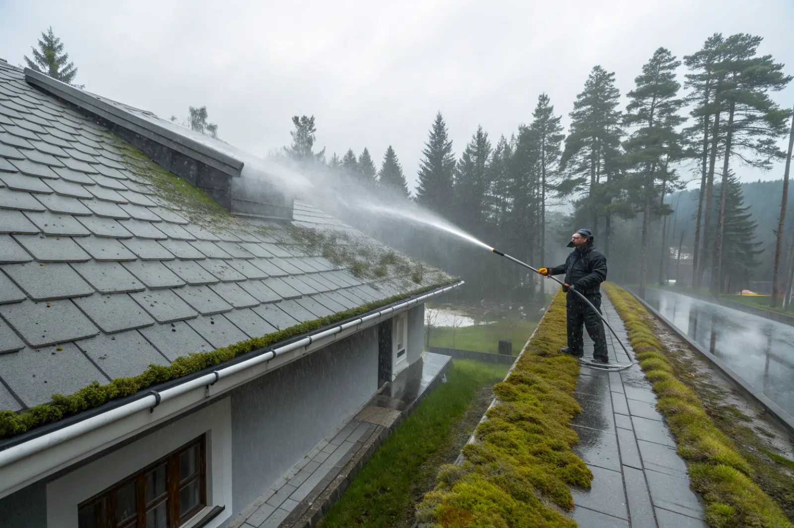

Bedömning
Vi kontrollerar taktyp, skick och mängd påväxt och väljer metod.
Mossa och påväxt håller kvar fukt, lyfter pannor och sätter igen hängrännorna. En skonsam taktvätt med rätt metod för din taktyp förlänger takets liv – utan högtryck som sliter på ytan.
Mossa fungerar som en svamp. Den suger upp regnvatten och håller taket fuktigt långt efter att det har slutat regna. På vintern fryser fukten, och när mossan växer in under pannornas överlapp kan den lyfta dem så att vatten blåser in under. Samtidigt spolas mossa och smuts ner i hängrännorna, som sätts igen och svämmar över.
I Stockholmsområdet är påväxt särskilt vanlig på villor med mycket träd runt huset – tall, gran och björk ger skugga och barr som håller kvar fukten. Norrsidan av taket drabbas nästan alltid först.
Regelbunden taktvätt är därför underhåll, inte bara utseende. Läs mer om orsaker och förebyggande i guiden mossa på taket.

Fel metod kan göra mer skada än mossan. Högtryckstvätt nära ytan blåser bort betongpannornas ytskikt, gör dem porösa och tar sig in under pannorna. Därför arbetar vi med lågtryck och rengöringsmedel som är anpassade för materialet.
Betongpannor tvättas skonsamt och behandlas mot ny påväxt. Tegelpannor är känsligare för hårda metoder och rengörs försiktigt. Plåttak tvättas fritt från smuts och krita – ofta som första steg inför takmålning.
Vi kontrollerar taktyp, skick och mängd påväxt och väljer metod.
Fasad, fönster, rabatter och rännor skyddas.
Grov mossa tas bort försiktigt för hand eller med borste.
Taket tvättas med lågtryck och anpassat rengöringsmedel.
Taket behandlas mot ny påväxt.
Hängrännor rensas och vi berättar om skador vi har sett.
När vi ändå är uppe på taket ser vi allt som är svårt att se från marken: spruckna pannor, lös nockpanna, dålig plåt runt skorstenen eller underlagspapp som syns vid takfoten. Du får veta vad vi har hittat, och om något bör åtgärdas kan det ofta göras samtidigt. Vill du ha ett skriftligt utlåtande gör vi en takbesiktning.
Vi rensar även hängrännor och stuprör som en del av tvätten, så att mossan inte bara flyttar från taket till rännan.
Det beror på läge. Ett tak i öppet, soligt läge klarar sig ofta 8–10 år mellan tvättarna, medan ett tak under höga träd kan behöva tvättas var 3–5:e år. En behandling mot påväxt efter tvätten gör att intervallet blir längre.
Bästa tiden för taktvätt är vår och höst, när det är plusgrader och mossan är fuktig och lätt att få bort. Vi tvättar inte vid frost.
Priset beror på takets storlek och lutning, taktyp, mängden mossa och hur lätt det är att komma åt taket. Rensning av hängrännor och behandling mot påväxt ingår ofta i samma arbete.
Vi publicerar inga fasta priser. Vi kommer ut gratis och lämnar ett skriftligt kostnadsförslag med vad som ingår.
Arbetskostnaden för taktvätt på villa ger ROT-avdrag. Vi gör avdraget direkt på fakturan. För 2026 är ROT-avdraget 30 % av arbetskostnaden, med ett tak på 50 000 kr per person och år. Läs mer i vår guide om ROT-avdrag för takarbete.
Villor under tall och björk med mycket påväxt.
Sollentuna →Äldre villaträdgårdar och skuggiga tak.
Bromma →Stora tomter med hög växtlighet.
Danderyd →Radhus och villor från 70-talet.
Täby →Betongtak på 60-talsvillor.
Spånga →Skuggiga tomter i skog och vid vatten.
Nacka →Orsaker, metoder och förebyggande.
Mossa på taket – behandling →Rensning och byte för god avvattning.
Hängrännor & stuprör →Nytt ytskydd på plåttak efter tvätt.
Takmålning →